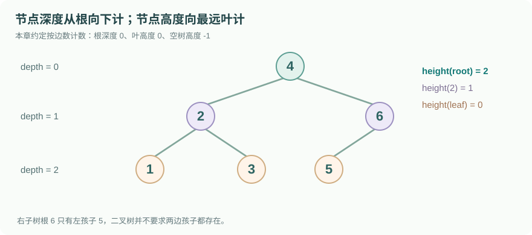
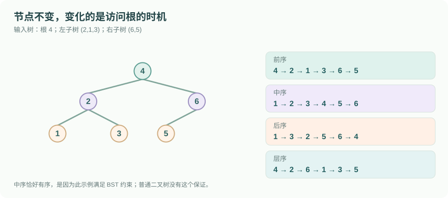
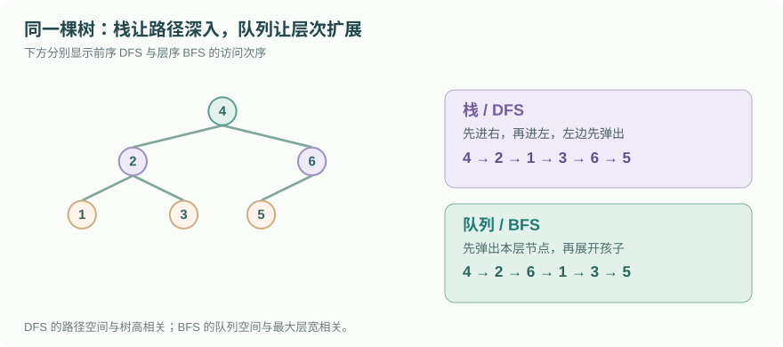

树基础：二叉树的结构与遍历
从父子关系、节点深度和高度约定出发，分别推导递归 DFS、显式栈 DFS 与队列 BFS。理解它们“访问全部节点”相同、访问顺序和空间占用却不同的原因。
为什么层次数据不是一个简单列表？
一个文件夹可以包含文件，也可以包含子文件夹。沿父子关系从根目录走到某个文件时，每一步都选择一个子目录；若用扁平列表表示所有条目，就很难直接表达这些包含关系。树是一类适合表达分层且无环的父子关系的数据结构。
对一棵有根树，根节点没有父节点；其余每个节点恰好有一个父节点；所有节点从根出发可达，且不存在环。二叉树进一步限制每个节点最多有两个有区分的孩子——左孩子与右孩子。它不是自动有序的：即使值能比较，普通二叉树也不要求左侧值比根小。
把根、叶、深度、高度精确标到图上
本章统一采用边数为单位：根节点深度为 0；节点深度是从根到它的边数；节点高度是从它向下到最远叶子的边数；叶节点高度为 0；树的高度等于根高度。不同教材有时用“节点数”定义高度，会把各值整体加 1，需要事先声明约定。

| 术语 | 精确定义 | 本图示例 |
|---|---|---|
| 根 | 唯一没有父节点的节点 | 4 |
| 叶 | 没有任何孩子的节点 | 1、3、5 |
| 深度 depth | 从根到该节点的边数 | 节点 5 深度 2 |
| 高度 height | 从该节点向下到最远叶子的边数 | 节点 2 高度 1；树高 2 |
| 子树 | 由节点与全部后代构成的树 | 根为 2 的子树含 2、1、3 |
链式存储 vs 顺序存储：什么时候公式 2i+1 成立？
链式存储直接在每个节点中保存 left 和 right 引用，缺失孩子设为 None。它可以表示任意二叉树形状。数组顺序存储常用于紧凑的完全二叉树，从 0 开始的节点下标 i，左右孩子槽位分别为 2i+1 和 2i+2；若不完整、缺失位置多，稀疏下标可能浪费大量槽位。
from dataclasses import dataclass
from typing import Optional
@dataclass
class TreeNode:
value: int
left: Optional["TreeNode"] = None
right: Optional["TreeNode"] = None
# 4
# / \
# 2 6
# / \ /
# 1 3 5
root = TreeNode(4,
TreeNode(2, TreeNode(1), TreeNode(3)),
TreeNode(6, TreeNode(5)))
def child_indices(i):
return (2 * i + 1, 2 * i + 2)
assert child_indices(0) == (1, 2)数组中“左孩子下标”公式只是对约定的层序布局的一种编码，不意味着逻辑树总是连续存储。对树节点进行频繁指针重接、删除整棵子树等操作时，链式表示通常更加直观。
深度优先的三个时刻：前序、中序、后序
对一个节点，把“处理当前节点”的动作放在左右子树递归的三个不同位置，就得到三个经典深度优先遍历（DFS）：前序先根再左再右，中序先左再根再右，后序先左再右再根。无论哪一种，都应把空子树作为递归基例。

def preorder(node):
if node is None:
return []
return [node.value] + preorder(node.left) + preorder(node.right)
def inorder(node):
if node is None:
return []
return inorder(node.left) + [node.value] + inorder(node.right)
def postorder(node):
if node is None:
return []
return postorder(node.left) + postorder(node.right) + [node.value]
assert preorder(root) == [4, 2, 1, 3, 6, 5]
assert inorder(root) == [1, 2, 3, 4, 5, 6]
assert postorder(root) == [1, 3, 2, 5, 6, 4]上面是易理解的递归写法，但每次通过列表拼接生成新结果，会重复复制已有列表；对偏斜树可能导致总时间达到 O(n²)。如果要得到严格 O(n) 的遍历时间，应使用可变结果数组在访问节点时追加，或改用生成器 yield。下面的可测试参考实现采用一次追加的版本。
迭代 DFS：显式栈等价地保存待处理节点
递归的调用栈隐含了“函数做完左边再回来处理右边”的上下文。用显式栈做前序遍历时，每次弹出一个节点处理，再先压右子节点、后压左子节点——因为栈是 LIFO，左子节点会先被取出。
def preorder_iter(root):
if root is None:
return []
stack = [root]
out = []
while stack:
node = stack.pop()
out.append(node.value)
if node.right is not None:
stack.append(node.right)
if node.left is not None:
stack.append(node.left)
return out
assert preorder_iter(root) == [4, 2, 1, 3, 6, 5]所有节点被访问一次，时间 O(n)。显式栈的最大长度依赖树形状；常见二叉树遍历中的辅助空间 O(h)（h 以节点计时的最大深度），最坏退化链为 O(n)。如果输入形成一个极深的链，迭代版本通常比 Python 深层递归更稳健，但这不是“恒定空间”。
层序遍历：队列里的节点正等待按深度展开
层序遍历（Breadth-First Search, BFS）按根、第一层、第二层访问节点。和 DFS 不同，它使用 FIFO 队列：先入队的父节点先扩展，因此第 1 层产生的所有节点会先于第 2 层处理。

from collections import deque
def level_order(root):
if root is None:
return []
q = deque([root])
levels = []
while q:
level = []
for _ in range(len(q)):
node = q.popleft()
level.append(node.value)
for child in (node.left, node.right):
if child is not None:
q.append(child)
levels.append(level)
return levels
assert level_order(root) == [[4], [2, 6], [1, 3, 5]]这段代码在进入每一层时先固定当前队列长度，因此能准确划分层界。时间 O(n)，队列最多保存一层中若干待处理节点，辅助空间与最大宽度 w 同阶，即 O(w)，最坏可能是 O(n)。
选择遍历策略，观察访问顺序
结构固定为图 1。切换策略时，按规则计算并列出完整节点序列。
高度与叶节点：用递归定义边数
要计算本章定义的“边数高度”，让空树返回 -1、叶子返回 0；对于非空节点，取左右子树高度的较大值再加 1：
def height_edges(node):
if node is None:
return -1
return 1 + max(height_edges(node.left),
height_edges(node.right))
assert height_edges(root) == 2
assert height_edges(TreeNode(8)) == 0
assert height_edges(None) == -1递归时间 O(n)，递归调用栈 O(h)；在极深树上，可能先达到 Python 递归深度限制。想处理不受限的输入深度，可使用显式迭代、BFS 层数计算或者受控的栈结构，而不应仅凭经验硬改递归限制。
复杂度与边界：树的形状会改变什么？
固定访问全部 n 个节点的遍历都必须至少检查每个节点一次，因此时间下界为 Ω(n)。但内存和延迟与形状有关：树越深，递归栈或显式路径越长；树越宽，层序队列可能存更多节点。更重要的是，普通二叉树的查找并不能承诺 O(log n)：如果值没有排序约束，需要全树搜索。
| 问题 | 合适的机制 | 常见上界与前提 |
|---|---|---|
| 列出全部节点 | 前序/中序/后序/层序 | O(n) 时间 |
| 计算边数高度 | 后序递归或 BFS 分层 | O(n) 时间 |
| 定位任意值 | 无序普通二叉树逐一搜索 | O(n) 最坏 |
| 数组下标映射孩子 | 完全树的紧凑层序布局 | 2i+1 / 2i+2，数组需满足约定 |
| 维持有序查找 | 二叉搜索树+平衡策略 | 将在后续章节讨论 |
请至少测试空树、单节点、只有左孩子、只有右孩子、平衡树、所有节点同值，以及深链状树。下一章将探究哪些附加的键序约束能让二叉树从“层次容器”变成“可排序搜索结构”。
带走三个判断准则
- 深度、高度必须注明用“边数”还是“节点数”；普通二叉树不自带 BST 有序性。
- 前中后序只改变“访问根”的时机；迭代 DFS 必须正确控制入栈顺序。
- BFS 使用队列分层，递归/迭代 DFS 使用栈式上下文；三者时间 O(n)，辅助空间依赖树的形状与宽度。
继续学习与校验资料
- MIT 6.006：Binary Trees, Part 1 — 树术语、表示与遍历
- Python deque — BFS 的队列实现
- 下一章：二叉搜索树 — 增加键序约束后的搜索与修改